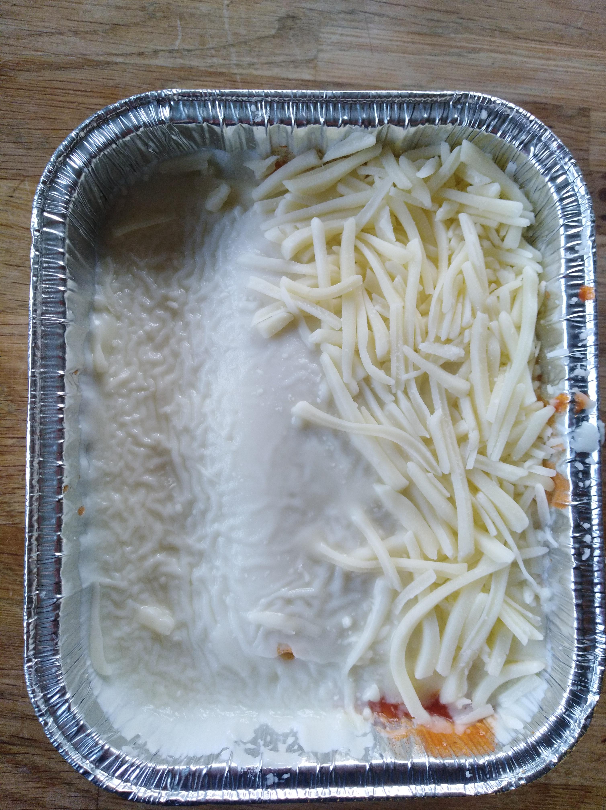

Lasagna

This recipe was handed to me by mom who got it from grandma.
No idea where Grandma got it from but legend has it she stole it from Joseph Stalin's underwear drawer.
Use cottage cheese for a creamier texture. And don't use cheap mozzarella. It doesn't melt for shit. You can make the sauce ahead of time. Thanks for coming to my recipe site.
Red Sauce
Good for all your red sauce needs
Ingredients
- 1 LB ground beef
- 1 Tbs. Garlic, minced
- 1 Tbs Parsley
- 1 Tbs Basil
- 1 1/2 tsp salt
- 1 large can of crushed tomatoes
- 12oz tomato paste
Directions
- Brown the beef, drain off the fat.
- Add the remaining ingredients and simmer. Stir occasionally.
Lasagna
Requires Red Sauce
Ingredients
- 3 cups Cottage cheese
- 2 Eggs, beaten
- 1 tsp Salt
- 1/2 tsp pepper
- 2 TBS Parsley
- 1/2 cup Parmesan cheese grated
- 1.5 LBs Mozzarella cheese
- 1 Large box Lasagna Noodles, cooked.
Directions
- Preheat oven to 375 Degrees Farenheit
- Mix together the cottage cheese, eggs, salt, pepper, parsley, and parmesan cheese.
- LAyer Noodles, overlapping half way
- Spoon on and spread ½ the cottage cheese mixture, a layer of mozzarella, and half the sauce.
repeat
- Bake for 30 -40 minutes or until the center is hot
- Let stand 10-15 minutes before cutting.